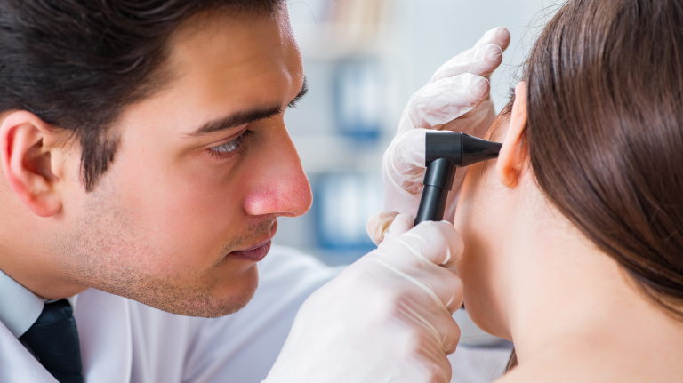

Otorrinolaringologo en Monterrey
El Dr. Jorge Treviño Garza es un Otorrinolaringólogo en Monterrey que cuenta con especialidad en Cirugía Plástica Facial, es un médico que constantemente se actualiza con el fin de mejorar sus servicios a los pacientes.
Servicios del Otorrinolaringólogo en Monterrey

- Consulta
- Radiofrecuencia de Cornetes
- Cirugia endoscopica para sinusitis
- Cirugia de Tabique nasal
- Endoscopia Nasal
- Otorrinolaringología Pediatrica
Te mereces un alto nivel de atención por parte de un Otorrinolaringólogo de vanguardia, por lo que el Dr. Jorge Treviño Garza especialista en padecimiento de los oídos.
Agenda una consulta por whatsapp al número 8115448285
o mediante una llamada al 8183475220
Nuestro correo: jorgetrega@gmail.com, atendemos de Lunes a Sábado de
9:00 a 19:00 hrs
Visitanos para que seas atendido con la atención que te mereces en
Centro de Especialidades Médicas
1er piso consultorio 126 Jose Benitez No 2704 Colonia obispado Monterrey NL CP 64060
El Otorrinolaringólogo en Monterrey Jorge Treviño es ahora uno de los médicos más importantes en su campo gracias a su contribución a la investigación y la prevención.
Da clic en el botón de WhatsApp para contactarnos para saber más sobre el otorrinolaringólogo en Monterrey.